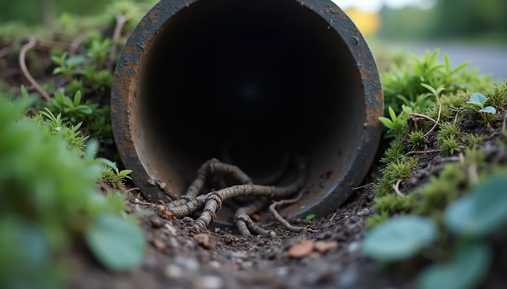
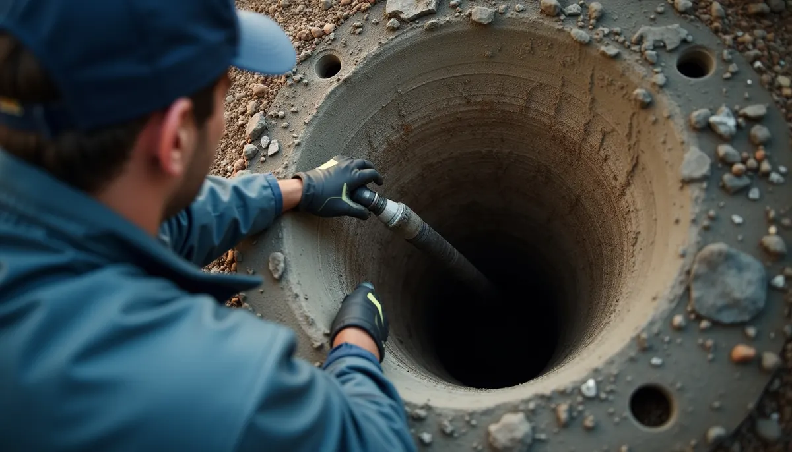

You might not think about your home's sewer line often, but it plays a crucial role in your daily life. When functioning correctly, it quietly manages your waste. However, an unnoticed issue, like an incorrect slope, can lead to serious problems beneath your feet. The angle of your sewer line might seem minor, but it can result in significant challenges if not addressed properly.
An improperly sloped sewer line is a silent risk that can trigger a series of costly and unpleasant issues. Many homeowners are unaware of its existence until they encounter major problems. This article will explore the dangers of improper sewer line slopes and how to prevent costly repairs.
The Peril of Imperfect Pitch: What Happens When Your Sewer Line Isn't Right?
A sewer line depends on gravity to move wastewater and solid waste from your home to the municipal sewer system or septic tank. For efficient operation, the line needs a precise slope.
If the slope is too flat—an angle of less than 1/4 inch per foot—wastewater can move sluggishly. Solid waste can settle and cause clogs. Imagine flushing the toilet, only to hear the unsettling sound of waste backing up.
This situation can lead to:
- Frequent backups: Toilets, sinks, and drains may frequently back up into your home. A 2019 survey from the American Society of Plumbing Engineers reported that 41% of homeowners experienced sewer line backups in the past three years.
- Persistent odors: Stagnant waste creates foul odors that can permeate your home. This indicates a deeper issue that needs to be addressed quickly.
- Root intrusion: Sluggish wastewater can attract tree roots in search of moisture. Once roots penetrate the line, they can wreak havoc, potentially incurring repair costs of $1,500 to $3,000 depending on the damage.

Conversely, overly steep sewer lines can also be problematic. When wastewater flows too quickly, it risks leaving solid waste behind, leading to:
- Waste being washed away: Solids may settle in the line, causing clogs similar to those from a flat slope.
- Erosion and wear: Fast-moving wastewater can erode pipes, leading to leaks. A study found that 20% of premature sewer line failures are due to erosion from mismanagement of slope.
- Increased risk of damage: The pressure from rapidly moving waste may cause cracks in the pipes, which typically leads to expenses of $3,000 or more for repairs.
Signs Your Sewer Line May Be Sloped Incorrectly
Recognizing signs of slope issues can save you from headaches and expenses. Watch for these indicators:
1. Frequent Clogs
If you're using a plunger more than occasionally, there may be an issue with your sewer line. Frequent clogs often indicate that waste isn't moving efficiently, likely due to an improper slope.
2. Unpleasant Odors
Foul smells from your drains or yard are not just annoying—they can indicate stagnant waste. If odors persist, it’s essential to address them before the situation worsens.
3. Slow Drains
Slowly draining sinks, tubs, or toilets can point to improper sewer line slope. This sluggishness can quickly escalate into bigger issues if not dealt with.
4. Water Pooling in Your Yard
If your yard has water pooling, especially near the sewer line, it could suggest a break or leak linked to incorrect slope. This issue not only looks bad but can lead to more severe implications if ignored.
The Importance of Proper Installation
Getting your sewer line installed properly plays a major role in its long-term functionality. A well-slope sewer line promotes smooth waste flow, reducing clogs and backups.
Keep these guidelines in mind when installing your sewer line:
- Maintain a slope of 1/4 inch per foot: This is generally the ideal angle for residential sewer lines, allowing for optimal flow without being too steep.
- Choose the right materials: Use pipes designed for sewer application that can withstand the flow and pressure of wastewater.
- Hire a professional: While DIY might seem appealing, sewer line installation requires expertise. Professionals will ensure correct slope and installation techniques.
How Angle Stop Plumbing Can Help
If you suspect your sewer line may be sloped incorrectly, it's crucial to call in the professionals. Angle Stop Plumbing specializes in diagnosing and fixing sewer line issues, helping keep your home functional and safe.
Comprehensive Inspections
Angle Stop Plumbing provides thorough inspections of your sewer line using advanced technology. They locate issues such as improper slope, clogs, and leaks with precision.
Expert Repairs
Once the problems are identified, Angle Stop Plumbing can expertly repair your sewer line slope. Their trained team can handle various sewer line issues, ensuring your system runs optimally.
Preventative Maintenance
In addition to repairs, Angle Stop Plumbing offers maintenance services to help you avoid future issues. Regular inspections can catch problems early, potentially saving you from expensive repairs down the road.

Secure Your Home's Safety
An incorrectly sloped sewer line can lead to serious issues for homeowners. Recognizing the signs of a slope problem can protect your home from potential disasters.
If you suspect an issue, don't wait for a bigger problem to arise. Reach out to Angle Stop Plumbing for a reliable inspection and expert repairs. They can ensure your sewer line functions smoothly, keeping your home safe and your plumbing in tip-top shape.
Taking care of your sewer line today could save you from costly repairs tomorrow. Don't allow a silent issue to linger beneath your home—act now to ensure peace of mind.